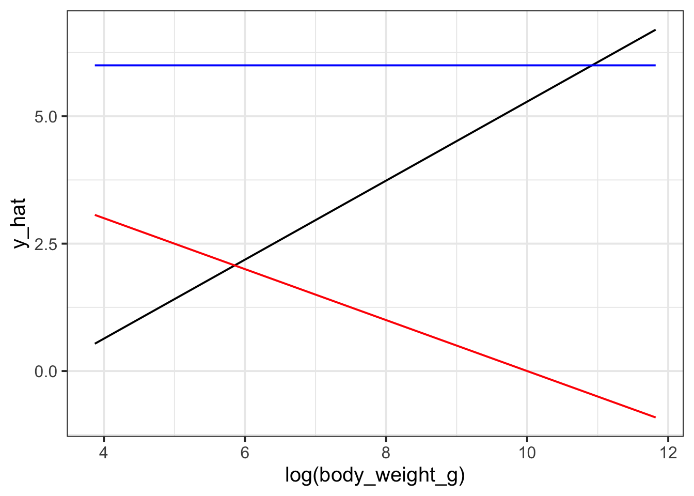
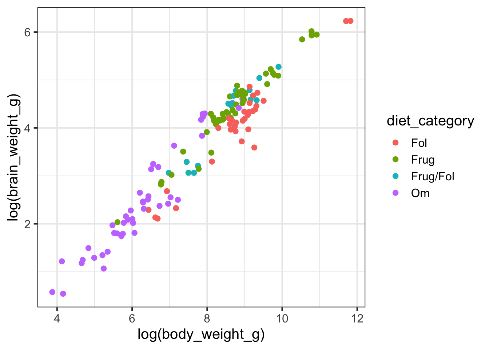
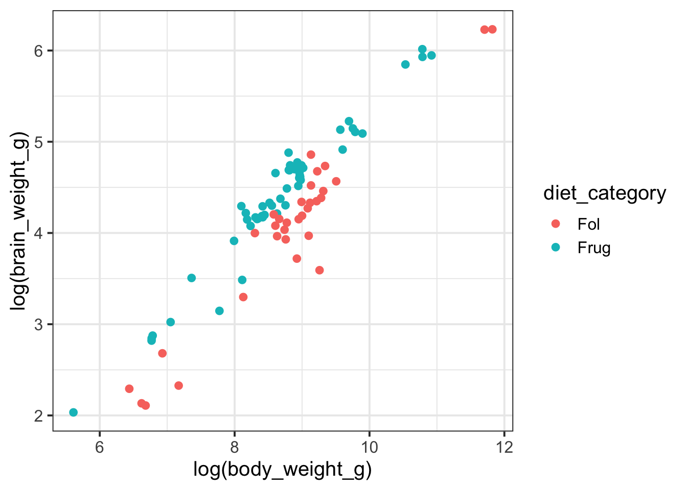
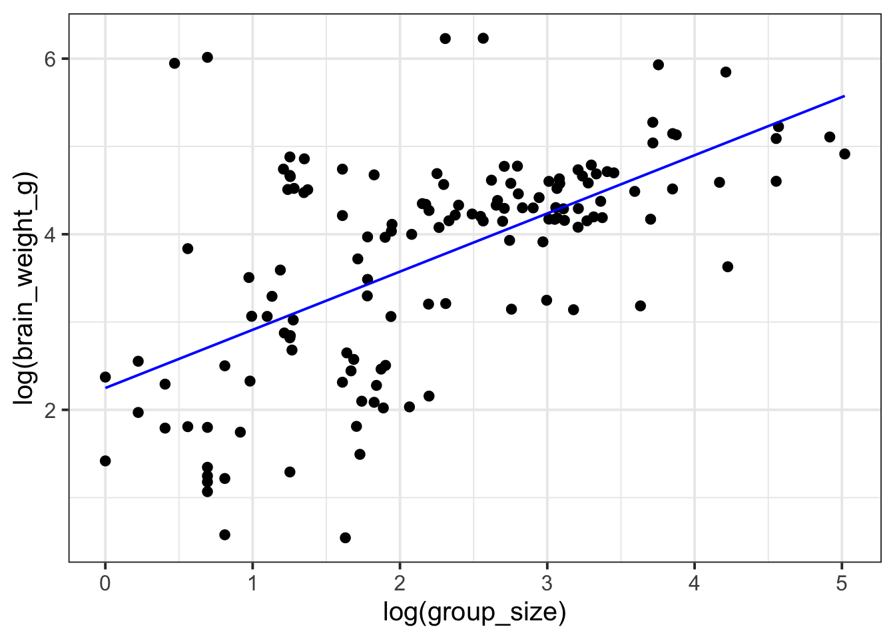

Practice your new modeling skills with these practice exam questions! Best to open a fresh Google Colab notebook and test things out! Refer to the study guide to find answers as well.
Types of models
Which of the following best describes the goal of a regression model?
In classification tasks, the output variable (label) is typically:
Which of the following is an example of a regression problem?
What is the primary difference between regression and classification?
Which of the following tasks is a classification problem?
True or false, supervised learning requires labeled data to train the model.
True or false, in unsupervised learning, the model attempts to identify patterns or structures in data without any specific target variable.
Model specification
Which of the following is the first step in model specification?
What does model specification involve?
Which of the following is NOT part of model specification?
Which of the following describes a correctly specified model?
True or false, Adding interaction terms between predictors is part of the model specification process.
Model specification is the final step in the model-building process.
Write the linear model equation in matrix notation.
\(y = Xβ + ε\)
or similar
In matrix notation, what is \(\mathbf{X}\)?
Suppose our SwimRecords data includes the year, sex, record time, swimsuit type, and swim cap type. Which of the following variables is most likely to be irrelevant for predicting swim times?
What is the potential issue of including too many irrelevant variables in your model?
Primate brains
Primates have brains of varying sizes, and one possible explanation for this variation is differences in body size. Larger-bodied primates may tend to have heavier brains, but this relationship is not always straightforward. To investigate whether body size can reliably explain differences in brain weight across primate species, let’s fit a model that predicts brain weight based on body size.
The data, in case you want to work with it yourself: primate brains
Code
data <-read_csv("https://kschuler.github.io/datasci/assests/csv/primate_brains.csv")glimpse(data)
Which of the following is \(w_1\) in the model specification \(\log(brain\_weight\_g) = w_1 1 + w_2 \log(body\_weight\_g)\)
Which of the following is \(w_2\) in the model specification \(\log(brain\_weight\_g) = w_1 1 + w_2 \log(body\_weight\_g)\)
Suppose a primate has a \(\log(body\_weight\_g)\) equal to 10. Which of the following would the model predict to be the primate’s \(\log(brain\_weight\_g)\)?
Which of the following figures could show the fitted model?

Social brain hypothesis
The Social Brain Hypothesis argues that the pressures of navigating increasingly complex social environments were a significant driver in the evolution of brain size and intelligence in humans and other primates.
Let’s specify and fit this model in R.
model <-lm(log(brain_weight_g) ~1+log(group_size), data = primate_brains)
Suppose we wanted to include \(\log(body\_size\_g)\) back into the model as an additional predictor of \(\log(brain\_size\_g)\). Specify the model in R.
Diet may influence the relationship between brain and body size in primates because the type of food a species consumes can impact its ability to meet the energy demands of a larger brain. Fruit-eating primates have access to energy-rich, easily digestible food, which could support the metabolic costs of both a large body and a larger, more complex brain.
Let’s begin by adding diet_category to our plot mapped to the color aesthetic.
Code
primate_brains %>%ggplot(aes(y =log(brain_weight_g), x =log(body_weight_g),color = diet_category )) +geom_point(size =2)

Frugivorous (“Frug”) primates primarily eat fruit, while folivorous (“Fol”) primates primarily consume leaves. The “Frug/Fol” category refers to primates that combine both fruit and leaf consumption in their diet. “Om” stands for omnivores, which we might suspect is similar to “Frug/Fol” with more variation in diet. To simplify things, let’s focus our analysis on just the Fol and Frug categories.
Code
fruit_v_leaves <- primate_brains %>%filter(diet_category %in%c("Fol", "Frug")) fruit_v_leaves %>%ggplot(aes(x =log(body_weight_g), y =log(brain_weight_g), color = diet_category )) +geom_point()

Suppose we specify a model that predicts brain weight by body size and diet category.
Code
model <-lm(log(brain_weight_g) ~log(body_weight_g) + diet_category, data = fruit_v_leaves) model
Notice we did not include an interaction term between body weight and diet category. Why might a modeler make this decision?
A modeler might choose not to include an interaction term based on exploratory visualization. The scatter plot shows roughly parallel lines for frugivorous and folivorous primates, which could indicate that body size influences brain weight similarly, regardless of diet.
You could have also said something relevant to model complexity: the modeler may have noticed in exploratory data analysis that body size seems to influence brain weight similarly, and decided to keep the model simpler and easier to interpret by leaving out the interaction.
True or false: the diet_category variable is categorical, so this is a classification problem.
What is the model’s prediction for a primate with a (log) body weight of 7 who eats leaves? Write your answer as a mathematical expression without simplifying it.

Social brain hypothesis
The Social Brain Hypothesis argues that the pressures of navigating increasingly complex social environments were a significant driver in the evolution of brain size and intelligence in humans and other primates.
Let’s specify and fit this model in R.
Code

Specify the model as an equation
\(\log(brain\_weight\_g) = w_1 1 + w_2 \log(group\_size)\)
or, if you created new columns in your data with the the log transformed data, for example:
then you could have written:
\(\log(brain\_weight\_g) = w_1 1 + w_2 \log(group\_size)\)
Given the figure above, which of the following could be the free paramter estimate for \(w_1\)?
Given the figure above, which of the following could be the free paramter estimate for \(w_2\)?
Suppose we encounter a primate in a (log) group size of 4. What could be the model prediction for their (log) brain weight?
Suppose we wanted to include \(\log(body\_size\_g)\) back into the model as an additional predictor of \(\log(brain\_size\_g)\). Specify the model in R.